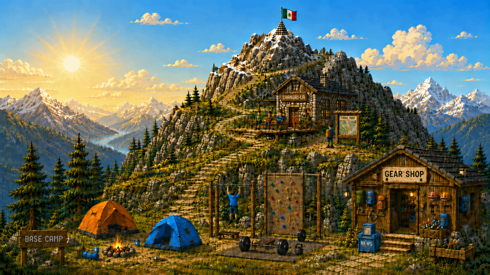

First Marathon
Target · Complete 42.2 km

Hello, stranger.
This mountain is a small representation of the things I’m currently interested in: tech, the outdoors, and storytelling, to name a few.
If you’d like to discuss anything you find here,
I’d be excited to chat.
Target · Complete 42.2 km
Target · Summit climb · 3,976 m
I’m pursuing the ISC2 Certified in Cybersecurity certification and learning about system design.
A personalized workspace for planning, tracking, and adapting running, strength, and hiking workouts, with Garmin integration.
A competitive 2048 game where players compete for weekly ETH rewards on Base.
A privacy-preserving inheritance protocol for passing cultural assets and secret knowledge across generations.
An onchain peer-to-peer lending protocol on Monad for borrower-investor credit markets.
A transparent local fundraising platform using USDC on Base with campaign verification and community voting.
After university, I worked as a Mechanical Designer before moving into blockchain. I co-founded Ethereum Mexico and Kairos Research, working across community, MEV, and DeFi.
I contributed to blockchain education across Latin America, co-founded Ethereum Mexico, and ran node infrastructure for several blockchains.
After finishing my bachelor’s degree, I worked as a Mechanical Designer and Project Manager in the heat exchanger industry.
“One encounter, one lifetime,”. Each meeting is unique and exists in its own space and time as an irreplaceable moment.
You can not explain all the known properties of water with three phases alone, you need a fourth phase.
The realization that life is absurd cannot be an end, but only a beginning.
A compact view of what I’m pursuing, enjoying, learning, and building right now.
— Karla Wheelock